Workshop mở rộng
Workshop thực hành AWS cho nền tảng quản lý trạm sạc xe điện

Tổng quan
Tài liệu mở rộng này phát triển thêm nội dung của chương 4-Workshop và toàn bộ bảy subsection hiện có thành một tài liệu tham chiếu ở mức production. Mục tiêu gốc của workshop vẫn được giữ nguyên: giải thích kiến trúc AWS đã triển khai cho EV Charging Station Management System, chứ không đi vào local setup. Điểm khác biệt nằm ở độ sâu. Mỗi subsection bên dưới được bổ sung thêm bối cảnh kiến trúc, logic xử lý ở mức cao, hành vi request và response, các giả định hợp lý, lưu ý về scale, lưu ý về bảo mật và các hướng cải thiện thực tế.
Nếu nhìn theo góc độ kiến trúc, workshop mô tả một nền tảng AWS nhiều lớp với ranh giới rõ ràng giữa public entry point, private runtime và control plane cho vận hành. Frontend được phát từ edge, backend chạy trên compute private, cơ sở dữ liệu quan hệ được cô lập, còn observability và administrative access được cung cấp bởi các dịch vụ control-plane native của AWS.
Cách sử dụng workshop
- Đi theo đúng thứ tự các phần, từ edge services đến observability, vì mỗi subsection đều dựa trên lớp trước đó.
- Thay các giá trị mẫu như
${APP_DOMAIN}và${DB_INSTANCE_ID}bằng thông tin môi trường thật trước khi chạy lệnh. - Các ví dụ CLI dùng cú pháp
bash. Nếu bạn dùng PowerShell, hãy điều chỉnh dấu nháy và cách xử lý biến cho phù hợp. - Nên thao tác trên môi trường không phải production khi thử Route 53, CloudFront invalidation hoặc RDS failover.
- Hãy đọc mỗi phần theo hai lượt: lượt đầu để hiểu flow, lượt sau để làm theo command và bước kiểm tra.
- Hãy xem mỗi subsection vừa là tài liệu học tập vừa là operational playbook. Phần giải thích mô tả thiết kế mong muốn, còn các lệnh cho bạn cách xác minh môi trường thật có đúng như thiết kế hay không.
- Khi một phần nhắc đến dịch vụ không được vẽ rõ trong sơ đồ, hãy hiểu đó là giả định kỹ thuật hợp lý để kiến trúc chạy được, không phải bằng chứng chắc chắn rằng dịch vụ đó đã được triển khai.
Các dịch vụ được dùng trong kiến trúc này
- Edge và phân phối frontend: Amazon Route 53, Amazon CloudFront, AWS WAF, Amazon S3, Amazon Location Service
- Tầng chạy ứng dụng: Amazon VPC, Internet Gateway, NAT Gateway, Application Load Balancer, Amazon EC2, EC2 Auto Scaling
- Tầng dữ liệu: Amazon RDS với bố cục primary và standby
- Vận hành và bảo mật: AWS Systems Manager, IAM instance profile, AWS Secrets Manager, AWS KMS
- Quan sát và giao tiếp: Amazon CloudWatch, AWS CloudTrail, Amazon SES, các bản ghi DNS email trong Route 53
Tập hợp dịch vụ này tạo thành một baseline khá thực tế cho ứng dụng web trên AWS. Route 53 và CloudFront nhận traffic từ người dùng, S3 chứa frontend tĩnh, ALB và EC2 xử lý request nghiệp vụ đồng bộ, RDS lưu trạng thái giao dịch, còn các dịch vụ hỗ trợ phụ trách truy cập vận hành, mã hóa, logging, audit và gửi thông điệp ra ngoài.
Các dịch vụ không xuất hiện trong sơ đồ này
- API Gateway: Không dùng trong thiết kế này vì traffic công khai đi vào qua CloudFront rồi tới Application Load Balancer. Trong tương lai, API Gateway chỉ thực sự cần thiết nếu hệ thống cần quản trị API ở mức sản phẩm như authorizer, usage plan, request validation hoặc throttle theo từng client.
- Lambda: Không được thể hiện. Backend đang được mô hình hóa bằng các EC2 instance chạy lâu dài. Tuy vậy, Lambda vẫn có thể được bổ sung sau này cho các tác vụ utility, dọn dẹp bất đồng bộ hoặc xử lý sự kiện từ SES.
- ECS / EKS: Không được thể hiện. Container orchestration nằm ngoài phạm vi của thiết kế này. Workshop cố tình giữ trọng tâm ở runtime theo kiểu EC2.
- DynamoDB: Không được thể hiện. Dữ liệu chính được mô hình hóa dưới dạng quan hệ trong Amazon RDS. DynamoDB chỉ hợp lý khi sau này cần key-value latency thấp, idempotency store hoặc read model theo sự kiện.
- EventBridge / SQS / SNS: Không được thể hiện. Sơ đồ tập trung vào luồng request đồng bộ và tích hợp trực tiếp giữa các dịch vụ. Các dịch vụ này sẽ phù hợp hơn khi cần retry, background processing hoặc tách notification ra khỏi request path.
- Cognito: Không được thể hiện. Đường truy cập admin đang dùng IAM và AWS Systems Manager thay vì user pool.
Biến môi trường dùng chung trong lab
export AWS_REGION=ap-southeast-1
export APP_DOMAIN=app.example.com
export HOSTED_ZONE_ID=Z123456789EXAMPLE
export STATIC_BUCKET=ev-prod-frontend
export CLOUDFRONT_DIST_ID=E123ABC456DEF
export PLACE_INDEX_NAME=ev-place-index
export ALB_NAME=ev-app-alb
export TARGET_GROUP_ARN=arn:aws:elasticloadbalancing:ap-southeast-1:123456789012:targetgroup/ev-app-tg/abc123
export ASG_NAME=ev-app-asg
export INSTANCE_ID=i-0123456789abcdef0
export APP_PORT=8080
export DB_INSTANCE_ID=ev-prod-rds
export DB_PORT=1433
export DB_SECRET_ID=ev/prod/database
export LOG_GROUP=/aws/ec2/ev-app
export SES_IDENTITY=example.com
export SES_SENDER=no-reply@example.com
export SES_RECIPIENT=ops@example.com
Ý nghĩa của các biến này:
${APP_DOMAIN},${HOSTED_ZONE_ID},${CLOUDFRONT_DIST_ID}và${STATIC_BUCKET}mô tả đường đi public của web frontend.${PLACE_INDEX_NAME}là tài nguyên geospatial mà frontend dùng để tra cứu địa điểm.${ALB_NAME},${TARGET_GROUP_ARN},${ASG_NAME},${INSTANCE_ID}và${APP_PORT}mô tả điểm vào ứng dụng và tầng compute.${DB_INSTANCE_ID},${DB_PORT}và${DB_SECRET_ID}mô tả cách workload kết nối và xác thực với tầng dữ liệu.${LOG_GROUP},${SES_IDENTITY},${SES_SENDER}và${SES_RECIPIENT}phục vụ cho kiểm tra observability và email.
Quyền AWS nên có
- Quyền đọc và thay đổi Route 53 cho các bước xác thực DNS
- Quyền với CloudFront và S3 để kiểm tra luồng phân phối frontend
- Quyền đọc EC2, ELBv2, Auto Scaling và VPC để kiểm tra tầng ứng dụng
- Quyền đọc RDS, và chỉ cấp quyền reboot có kiểm soát ở môi trường được cho phép
- Quyền với SSM, Secrets Manager, IAM, KMS, CloudWatch, CloudTrail và SES để thao tác vận hành
Lưu ý theo nguyên tắc least privilege:
- Với phần lớn bước trong workshop, quyền đọc là đủ.
- Quyền ghi chỉ nên được mở trong training environment hoặc change window khi bài thực hành thực sự cần thay đổi trạng thái hạ tầng.
Nội dung
- Tổng quan
- Phân phối biên và yêu cầu dữ liệu bản đồ
- Điều phối ứng dụng riêng tư và tầng tính toán
- Độ bền dữ liệu quan hệ và cô lập mạng
- Truy cập vận hành và quản trị bí mật
- Giám sát, kiểm toán và gửi email
- Phân tích kiến trúc workshop chuyên sâu
Tổng quan workshop và bản đồ dịch vụ AWS

Tổng quan hệ thống
- EV Charging Station Management System được triển khai như một nền tảng web nhiều lớp trên AWS.
- Người dùng truy cập frontend qua Route 53 và CloudFront.
- Static asset được lưu trong Amazon S3 và được bảo vệ phía sau CloudFront Origin Access Control.
- Request backend được chuyển tới các EC2 instance private thông qua Application Load Balancer.
- Dữ liệu nghiệp vụ được lưu trong Amazon RDS và không public ra bên ngoài.
- Đội vận hành sử dụng các dịch vụ gốc của AWS như Systems Manager, Secrets Manager, CloudWatch, CloudTrail và SES.
- Kiến trúc này tách biệt rõ content delivery, xử lý nghiệp vụ đồng bộ, lưu trữ dữ liệu và control plane cho vận hành để mỗi lớp có thể tối ưu riêng.
- Thiết kế cũng ngầm giả định backend có mức state thấp ở từng instance, nhờ đó việc scale ngang bằng Auto Scaling mới thực sự hiệu quả.
Phần này làm gì:
- Thiết lập bản đồ hệ thống dùng chung cho sáu subsection còn lại.
- Giải thích vì sao workshop được tổ chức theo lớp kiến trúc thay vì chỉ liệt kê các dịch vụ AWS.
- Giúp người đọc mới nhận ra ngay thành phần nào public, thành phần nào private và thành phần nào chỉ dành cho operator.
Vì sao phần này tồn tại:
- Nhóm kỹ thuật sẽ debug nhanh hơn khi hiểu chuỗi dịch vụ đầy đủ trước khi soi vào từng service riêng lẻ.
- Nhiều sự cố trên AWS xuất phát từ vấn đề ranh giới giữa các lớp chứ không phải do một dịch vụ duy nhất.
- Phần này ngăn các giả định sai như “hệ thống dùng Lambda” hoặc “database là public” bằng cách chốt lại kiến trúc ngay từ đầu.
Bản đồ dịch vụ AWS
| Nhu cầu kiến trúc | Dịch vụ dùng trong thiết kế này | Lý do sử dụng | Không dùng ở đây |
|---|---|---|---|
| DNS công khai | Amazon Route 53 | Điều hướng người dùng tới điểm vào của hệ thống | API Gateway custom domain |
| Phân phối frontend | Amazon CloudFront + Amazon S3 | Phát static asset toàn cầu với cache | Amplify Hosting |
| Bảo vệ edge | AWS WAF | Lọc web traffic không mong muốn | Chi tiết cấu hình Shield không được thể hiện |
| Tra cứu bản đồ | Amazon Location Service | Phục vụ tìm kiếm địa lý và tính năng bản đồ | Nhà cung cấp bản đồ bên thứ ba |
| Điểm vào API | Application Load Balancer | Chuyển tiếp HTTP traffic tới compute private | API Gateway |
| Compute | Amazon EC2 + Auto Scaling | Chạy backend process lâu dài | Lambda, ECS, EKS |
| Outbound internet | NAT Gateway + Internet Gateway | Cho phép instance private đi ra ngoài khi cần | EC2 public |
| Lưu trữ quan hệ | Amazon RDS | Lưu dữ liệu giao dịch với standby support | DynamoDB |
| Truy cập admin | AWS Systems Manager | Tránh phải mở SSH trực tiếp | Bastion host |
| Quản lý secret | AWS Secrets Manager + AWS KMS | Tập trung hóa và mã hóa secret | Hard-coded credentials |
| Monitoring | Amazon CloudWatch | Thu thập metrics và logs | APM bên thứ ba không được thể hiện |
| Audit | AWS CloudTrail | Ghi nhận hoạt động API của AWS | EventBridge audit fan-out |
| Amazon SES | Gửi email giao dịch | SNS email delivery | |
| Hướng mở rộng workflow | AWS Step Functions | Phù hợp nếu charging hoặc settlement trở thành workflow nhiều bước | Chưa nằm trong triển khai hiện tại |
| Hướng mở rộng async | Amazon EventBridge / SQS / SNS | Phù hợp khi cần xử lý nền và tách notification | Chưa nằm trong triển khai hiện tại |
Luồng AWS đầu cuối
- Người dùng phân giải
${APP_DOMAIN}thông qua Amazon Route 53. Dịch vụ: Amazon Route 53. Điều xảy ra: Route 53 trả về điểm vào CloudFront cho client. Tại sao quan trọng: DNS là điểm điều khiển đầu tiên của toàn bộ ứng dụng công khai. - CloudFront nhận request và đánh giá rule của AWS WAF. Dịch vụ: Amazon CloudFront và AWS WAF. Điều xảy ra: Lớp edge kết thúc HTTPS, áp dụng chính sách bảo mật và quyết định request có được đi tiếp hay không. Tại sao quan trọng: Edge layer vừa giảm độ trễ vừa lọc request xấu trước khi backend phải xử lý.
- CloudFront trả nội dung từ cache hoặc lấy từ Amazon S3. Dịch vụ: Amazon CloudFront và Amazon S3. Điều xảy ra: Nội dung tĩnh được phục vụ ngay từ cache nếu có, nếu không thì lấy riêng tư từ S3. Tại sao quan trọng: Frontend được phát nhanh và bucket S3 không cần public.
- Frontend gọi backend APIs thông qua Application Load Balancer. Dịch vụ: Application Load Balancer. Điều xảy ra: Request động được chuyển sang application layer thay vì đi tiếp trên đường static delivery. Tại sao quan trọng: ALB là public HTTP entry point của các request động.
- ALB chuyển traffic tới các EC2 instance healthy trong private subnet. Dịch vụ: ALB, Amazon EC2, EC2 Auto Scaling. Điều xảy ra: Listener và target group quyết định node nào sẽ xử lý request. Tại sao quan trọng: Backend có thể scale ngang mà không cần public trực tiếp từng instance.
- Ứng dụng trên EC2 đọc và ghi dữ liệu quan hệ trong Amazon RDS. Dịch vụ: Amazon RDS. Điều xảy ra: Giao dịch dữ liệu đi qua private network tới managed database. Tại sao quan trọng: Tính nhất quán dữ liệu được giữ trong dịch vụ quan hệ có standby.
- Ứng dụng lấy secret, ghi log và gửi email bằng IAM role của instance. Dịch vụ: IAM, Secrets Manager, KMS, CloudWatch, SES. Điều xảy ra: Workload dùng temporary credential của instance profile để truy cập các dịch vụ hỗ trợ. Tại sao quan trọng: Không cần lưu static credential trên ổ đĩa máy chủ.
- Đội vận hành quản trị môi trường qua Systems Manager và kiểm toán bằng CloudTrail. Dịch vụ: AWS Systems Manager và AWS CloudTrail. Điều xảy ra: Hoạt động quản trị đi qua control channel của AWS và có thể audit được. Tại sao quan trọng: Có thể quản trị hệ thống mà không cần public SSH.
Hành vi request và response:
- Browser nhận static asset từ CloudFront hoặc nhận JSON/API response từ application layer phía sau ALB.
- Traffic giữa backend và database là private, có trạng thái và mang tính giao dịch.
- Control-plane traffic và observability traffic không nằm trực tiếp trên đường request của người dùng, nhưng lại cực kỳ quan trọng để vận hành và điều tra sự cố.
Các bước kiểm tra nền tảng
Hãy chạy các lệnh sau trước khi đi vào những phần còn lại.
aws sts get-caller-identity
aws route53 list-hosted-zones --region ${AWS_REGION}
aws cloudfront list-distributions --region ${AWS_REGION}
aws ec2 describe-instances --region ${AWS_REGION} --max-items 5
aws rds describe-db-instances --region ${AWS_REGION}
Những điều cần kiểm tra:
- Bạn đang xác thực đúng AWS account mong muốn.
- Hosted zone, CloudFront distribution, EC2 instance và RDS instance đều tồn tại trong môi trường đúng.
- Region và naming convention khớp với các giá trị bạn sẽ dùng ở các lab tiếp theo.
- Tên tài nguyên đủ nhất quán để sau này còn có thể xây dashboard, runbook hoặc automation xoay quanh chúng.
Hướng dẫn cho người mới bắt đầu
- Hãy bắt đầu bằng cách phân biệt thành phần nào public và thành phần nào private.
- Xem Route 53, CloudFront, ALB và SES là các dịch vụ hướng công khai.
- Xem EC2, RDS, Secrets Manager và KMS là các dịch vụ nội bộ cần kiểm soát chặt.
- Xem Systems Manager, CloudWatch và CloudTrail là bộ công cụ cho operator.
- Nếu một dịch vụ không xuất hiện trong sơ đồ, không nên tự giả định rằng nó tồn tại trong môi trường triển khai.
- Hãy đọc kiến trúc theo chiều trái sang phải để hiểu request flow, và theo chiều trên xuống dưới để hiểu trust boundary và ownership vận hành.
Ghi chú / Giả định
- Sơ đồ thể hiện infrastructure topology, không phải application source code hay CI/CD pipeline.
- Proposal hiện có nhắc đến Amazon RDS for SQL Server, nhưng bản thân sơ đồ chỉ ghi Amazon RDS. Hãy điều chỉnh lệnh theo engine thực tế.
- Không có thành phần API Gateway, Lambda, ECS, EKS, DynamoDB, EventBridge, SQS, SNS hay Cognito nào xuất hiện trong kiến trúc này.
- TLS certificate, security group, subnet route table và EC2 launch template không được vẽ ra, nhưng bắt buộc phải có nếu muốn kiến trúc này hoạt động đúng trong môi trường AWS thật.
Thực hành phân phối biên và yêu cầu dữ liệu bản đồ
Tổng quan
- Phần này tập trung vào lớp edge hướng công khai của nền tảng.
- Nó giải thích cách DNS, CDN caching, WAF filtering, S3 origin access và request tới Location Service hoạt động cùng nhau.
- Đây là điểm bắt đầu phù hợp khi frontend chậm, domain không resolve hoặc dữ liệu bản đồ bị thiếu.
- Ở góc nhìn kiến trúc AWS, đây là lớp tối ưu độ trễ và cũng là tuyến phòng thủ đầu tiên trước khi request chạm vào backend.
Phần này làm gì:
- Đưa trình duyệt người dùng vào hệ thống thông qua Route 53 và CloudFront.
- Bảo vệ đường vào public bằng WAF và cơ chế S3 origin private.
- Cung cấp bản đồ và place search mà không ép toàn bộ geospatial traffic phải đi qua backend.
Vì sao phần này tồn tại:
- Static asset và map request có đặc tính cache, scale và độ trễ rất khác so với API giao dịch.
- Frontend nên được phát toàn cầu với chi phí thấp.
- Đường edge cần hấp thụ các kiểu tấn công phổ biến trước khi chúng tiêu tốn tài nguyên của ứng dụng.
Phần này giải quyết vấn đề gì:
- Phân phối frontend chậm hoặc thiếu ổn định theo khu vực
- Tăng tải không cần thiết lên S3 origin hoặc backend
- Lộ public bucket chứa frontend
- Trộn lẫn luồng web tĩnh với luồng dữ liệu bản đồ
Các dịch vụ AWS trong phần này
Amazon Route 53
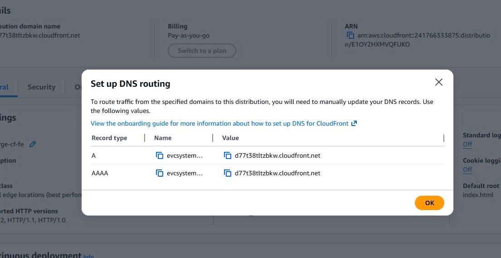
- Phân giải domain công khai và chuyển người dùng đến điểm truy cập phù hợp.
- Là bước đầu tiên trong luồng request.
- Đồng thời là nơi quản lý subdomain, record xác thực và các chính sách DNS nâng cao nếu sau này kiến trúc cần failover hoặc cutover.
Amazon CloudFront
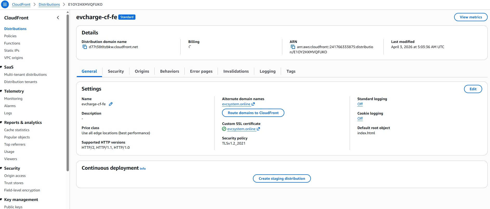
- Phân phối frontend asset đã cache với độ trễ thấp.
- Giảm số lần truy vấn về origin (S3).
- Kết thúc HTTPS gần người dùng và cho phép áp dụng cache policy, header policy và origin control.
AWS WAF
- Lọc các request HTTP/HTTPS đầu vào.
- Bảo vệ hệ thống trước các tấn công phổ biến ngay tại edge.
- Là nơi hợp lý để áp dụng managed rule, rate limit hoặc bot filtering ở mức coarse trước khi request chạm application layer.
Amazon S3
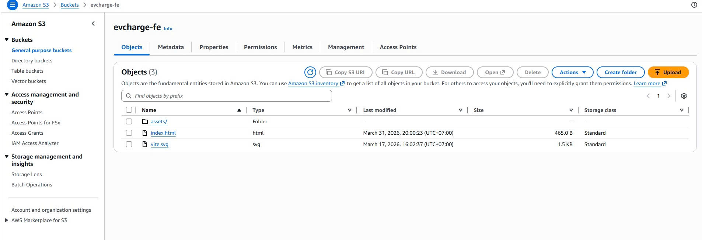
- Lưu trữ các file frontend (HTML, JS, CSS).
- Là origin cho CloudFront thông qua cơ chế Origin Access Control.
- Giữ cho việc deploy frontend đơn giản vì tách riêng object delivery khỏi runtime của ứng dụng.
Amazon Location Service
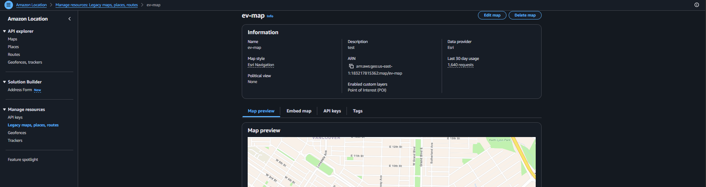
- Xử lý các yêu cầu liên quan đến bản đồ và dữ liệu địa lý.
- Hoạt động tách biệt với luồng phân phối static asset.
- Cho phép frontend dùng trực tiếp năng lực geospatial thay vì bắt backend làm proxy cho map data.
Luồng AWS từng bước
- Người dùng mở
${APP_DOMAIN}trên trình duyệt. Dịch vụ: Amazon Route 53. Điều xảy ra: Route 53 phân giải hostname công khai tới CloudFront distribution. Tại sao quan trọng: Nếu DNS sai, các dịch vụ AWS phía sau sẽ không được truy cập đúng. - CloudFront nhận HTTPS request. Dịch vụ: Amazon CloudFront và AWS WAF. Điều xảy ra: WAF rule kiểm tra request trước khi distribution phục vụ nội dung. Tại sao quan trọng: Traffic xấu hoặc bất thường có thể bị chặn ngay tại edge.
- CloudFront kiểm tra file có nằm trong cache hay không. Dịch vụ: Amazon CloudFront và Amazon S3. Điều xảy ra: Nếu có cache thì trả ngay; nếu cache miss thì lấy từ S3. Tại sao quan trọng: Cache hit giúp giảm độ trễ và giảm tải cho origin bucket.
- S3 chỉ trả object thông qua đường CloudFront đã được cho phép. Dịch vụ: Amazon S3 và CloudFront Origin Access Control. Điều xảy ra: Bucket vẫn private, còn CloudFront là bên đọc được ủy quyền. Tại sao quan trọng: Người dùng không thể bỏ qua CloudFront để truy cập trực tiếp vào S3.
- Frontend sau đó gửi request lấy dữ liệu địa lý. Dịch vụ: Amazon Location Service. Điều xảy ra: Trình duyệt hoặc mã frontend gọi place index và map API. Tại sao quan trọng: Luồng map được tách khỏi luồng phân phối static asset.
- Frontend tiếp tục gọi backend API qua tầng ứng dụng. Dịch vụ: Application Load Balancer ở phần tiếp theo. Điều xảy ra: Traffic động rời lớp edge và đi vào compute stack private. Tại sao quan trọng: Static traffic và dynamic traffic có thể được tối ưu riêng.
Hành vi request và response
- DNS response: Route 53 trả về điểm vào CloudFront cho trình duyệt.
- Static asset response: CloudFront trả file đã cache hoặc fetch object từ S3.
- Geospatial response: Amazon Location Service trả dữ liệu tìm kiếm hoặc bản đồ cho frontend.
- Dynamic handoff: Sau khi SPA tải xong, request API sẽ rời lớp edge và chuyển sang application tier phía sau ALB.
Logic nội bộ ở mức cao
- CloudFront là lớp read-optimization cho frontend.
- S3 là nơi lưu trữ chuẩn của artifact frontend, nhưng không phải public endpoint.
- WAF là bộ lọc bảo mật ở mép ngoài hệ thống.
- Amazon Location Service là dependency chuyên biệt của UI, không phải backend business service chính.
AWS CLI Walkthrough
1. Kiểm tra hosted zone
aws route53 list-hosted-zones --region ${AWS_REGION}
Vì sao lệnh này cần thiết:
- Nó xác minh rằng quyền quản lý DNS đang nằm ở đúng account và đúng bối cảnh làm việc.
2. Tạo hoặc cập nhật bản ghi DNS của ứng dụng
Tạo file route53-app-record.json:
{
"Comment": "Point app subdomain to CloudFront",
"Changes": [
{
"Action": "UPSERT",
"ResourceRecordSet": {
"Name": "app.example.com",
"Type": "CNAME",
"TTL": 300,
"ResourceRecords": [
{
"Value": "d111111abcdef8.cloudfront.net"
}
]
}
}
]
}
Áp dụng thay đổi và chờ trạng thái đồng bộ:
CHANGE_ID=$(aws route53 change-resource-record-sets \
--hosted-zone-id ${HOSTED_ZONE_ID} \
--change-batch file://route53-app-record.json \
--query 'ChangeInfo.Id' \
--output text)
aws route53 wait resource-record-sets-changed --id ${CHANGE_ID}
Vì sao lệnh này cần thiết:
- Mô hình
UPSERTan toàn cho các thay đổi hạ tầng có thể lặp lại. - Chờ trạng thái sync giúp tránh kiểm thử quá sớm khi Route 53 chưa hoàn tất thay đổi nội bộ.
3. Triển khai frontend asset lên S3
aws s3 sync ./dist s3://${STATIC_BUCKET} --delete
Vì sao lệnh này cần thiết:
- Nó mô hình hóa bước publish trong pipeline phát hành frontend.
- Tham số
--deletegiúp bucket khớp với output hiện tại, nhưng trong production cần dùng cẩn thận.
4. Xóa cache CloudFront sau khi deploy
aws cloudfront create-invalidation \
--distribution-id ${CLOUDFRONT_DIST_ID} \
--paths "/*"
Vì sao lệnh này cần thiết:
- CloudFront có thể tiếp tục trả asset cũ dù S3 đã có phiên bản mới.
- Trong production, targeted invalidation hoặc asset versioning thường tốt hơn việc luôn invalidate
/*.
5. Thử một truy vấn tìm kiếm với Location Service
aws location search-place-index-for-text \
--index-name ${PLACE_INDEX_NAME} \
--text "EV charging station" \
--region ${AWS_REGION}
Vì sao lệnh này cần thiết:
- Nó tách riêng bài test của đường dữ liệu bản đồ ra khỏi phần frontend và backend.
- Nó giúp xác định lỗi map nằm ở đâu: edge, Location Service hay frontend rendering.
Ví dụ cấu hình
S3 bucket policy private cho CloudFront OAC
{
"Version": "2012-10-17",
"Statement": [
{
"Sid": "AllowCloudFrontServicePrincipalReadOnly",
"Effect": "Allow",
"Principal": {
"Service": "cloudfront.amazonaws.com"
},
"Action": "s3:GetObject",
"Resource": "arn:aws:s3:::ev-prod-frontend/*",
"Condition": {
"StringEquals": {
"AWS:SourceArn": "arn:aws:cloudfront::123456789012:distribution/E123ABC456DEF"
}
}
}
]
}
Ý nghĩa của cấu hình này:
- Bucket S3 vẫn giữ trạng thái private.
- Chỉ CloudFront distribution được chỉ định mới có quyền đọc object.
- Người dùng buộc phải đi qua CloudFront, nơi WAF có thể kiểm tra traffic.
- Policy thu hẹp origin access về đúng distribution đã biết, an toàn hơn rất nhiều so với public read.
Best practices cho lớp này
- Trong production, nên ưu tiên Route 53 alias record tới CloudFront thay vì CNAME nếu phù hợp.
- Dùng asset versioning để giảm nhu cầu invalidate cả cache.
- Gắn AWS-managed WAF rule trước, sau đó mới tinh chỉnh custom rule khi đã hiểu lưu lượng thật.
- Cân nhắc dùng CloudFront response headers policy để thêm security header như
Strict-Transport-SecurityhoặcContent-Security-Policy. - Tách resource Amazon Location riêng cho từng môi trường để tránh thay đổi nhầm.
Những gì cần xác minh
- DNS resolve về đúng CloudFront distribution.
- Bucket S3 không public read.
- Sau mỗi lần deploy đều có CloudFront invalidation.
- Chức năng tìm kiếm bản đồ hoạt động qua Amazon Location Service.
- WAF đã được gắn với CloudFront distribution trong môi trường mục tiêu.
- TLS certificate hợp lệ và frontend được phục vụ qua HTTPS end-to-end.
Lỗi thường gặp
- Cập nhật nội dung S3 nhưng quên invalidate CloudFront.
- Mở public bucket S3 thay vì dùng OAC.
- Trỏ Route 53 đến sai CloudFront domain.
- Chẩn đoán lỗi map ở backend trong khi nguyên nhân thật nằm ở cấu hình Amazon Location.
- Chỉ xem CloudFront như một cache mà quên vai trò bảo vệ origin và lọc request ở edge.
Ghi chú / Giả định
- Sơ đồ thể hiện Amazon Location Service là đường tích hợp cho frontend, nhưng không ghi rõ map style hay place index cụ thể.
- Trong môi trường production, Route 53 có thể dùng alias thay vì CNAME. Ví dụ ở đây dùng CNAME để dễ hiểu.
- Sơ đồ không có API Gateway hay Lambda ở lớp edge. Request động được chuyển xuống tầng ứng dụng dùng ALB.
- Nếu cần kiểm soát client truy cập dữ liệu bản đồ chặt hơn, sau này có thể phải thêm cơ chế ký request hoặc một lớp backend trung gian.
Thực hành điều phối ứng dụng riêng tư và tầng tính toán
Tổng quan
- Phần này giải thích cách request động đi từ lớp edge vào compute private.
- Nội dung tập trung vào VPC, public và private subnet, Internet Gateway, NAT Gateway, ALB, EC2 instance và Auto Scaling.
- Đây là phần quan trọng nhất khi xử lý lỗi
5xx, target unhealthy hoặc sự cố outbound connectivity. - Về bản chất, đây là đường thực thi cốt lõi cho auth, booking, charging workflow và các nghiệp vụ đồng bộ khác của hệ thống.
Phần này làm gì:
- Nhận public API traffic tại ALB.
- Chuyển request tới các EC2 instance healthy trong private subnet.
- Cung cấp outbound access có kiểm soát cho các instance mà không cần public IP.
Vì sao phần này tồn tại:
- Ứng dụng cần một public API entry point ổn định nhưng không nên public từng compute node riêng lẻ.
- Backend cần khả năng scale ngang và tự phục hồi.
- Private subnet giúp giảm bề mặt tấn công, còn NAT giữ cho backend vẫn đi ra ngoài được khi cần.
Phần này giải quyết vấn đề gì:
- Public trực tiếp application server ra internet
- Không có cơ chế phân phối traffic có kiểm soát giữa các instance
- Không thể thay node lỗi mà không ảnh hưởng dịch vụ
- Không tách bạch rõ inbound public access với outbound dependency access
Các dịch vụ AWS trong phần này
Amazon VPC
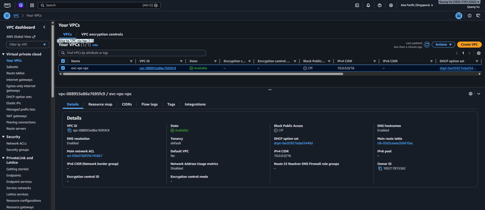
- Định nghĩa ranh giới mạng cho toàn bộ hệ thống.
- Là nơi chứa tất cả subnet, gateway và compute resource.
- Cho phép tách public routing, private compute và private data thành các phân đoạn có kiểm soát.
Internet Gateway
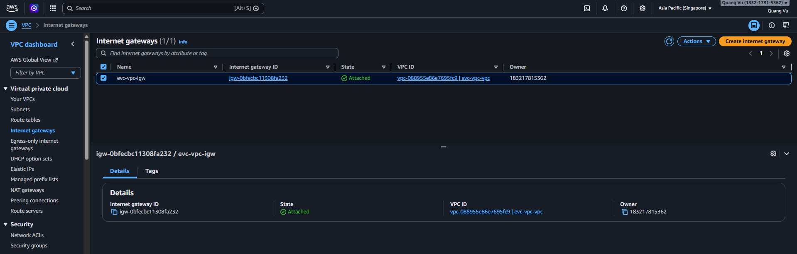
- Gắn VPC với internet công khai.
- Cho phép traffic đi vào/ra khỏi VPC theo route table.
- Hỗ trợ các tài nguyên phải hướng internet như ALB và NAT Gateway.
NAT Gateway
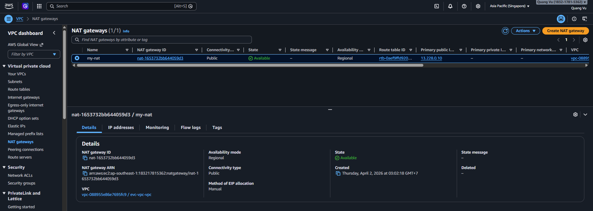
- Cho phép các instance trong private subnet truy cập internet.
- Không cho phép inbound traffic trực tiếp từ internet.
- Là điểm egress có kiểm soát cho việc update package, tải dependency hoặc gọi AWS public endpoint.
Application Load Balancer
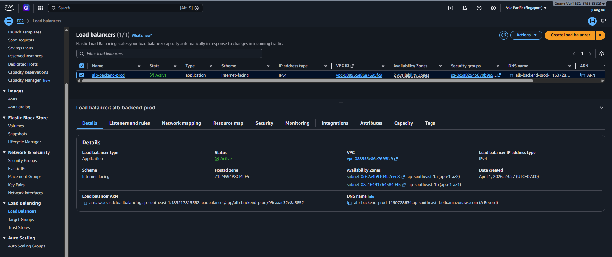
- Nhận request HTTP/HTTPS từ bên ngoài.
- Phân phối traffic tới các EC2 instance phía sau.
- Cung cấp health-aware routing và có thể gắn listener rule theo host hoặc path.
Amazon EC2
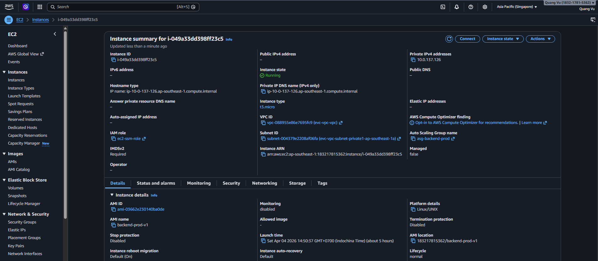
- Chạy application backend.
- Xử lý business logic và trả response.
- Chứa runtime của ứng dụng, process state cục bộ và các agent như SSM hay CloudWatch logging.
EC2 Auto Scaling
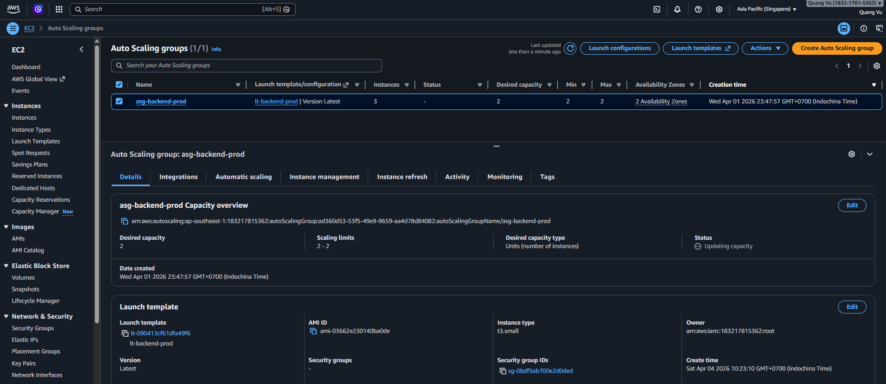
- Tự động scale số lượng instance theo load.
- Đảm bảo high availability trên nhiều Availability Zone.
- Thay thế node unhealthy hoặc bị terminate để duy trì desired capacity.
Vì sao thiết kế này dùng ALB + EC2
- Sơ đồ thể hiện các application server chạy lâu dài, nên Amazon EC2 là mô hình compute đang dùng.
- Điểm vào công khai của API là Application Load Balancer, không phải API Gateway.
- Không có Lambda, ECS hay EKS trong sơ đồ, nên workshop này không giả định serverless hay container orchestration.
- Việc đặt compute trong private subnet cho thấy instance không nên bị truy cập trực tiếp từ internet.
- Mô hình này phù hợp với workload chạy lâu dài, có connection pool hoặc đặc tính runtime kiểu JVM.
Luồng AWS từng bước
- Frontend gửi request động tới hostname của backend. Dịch vụ: Application Load Balancer. Điều xảy ra: ALB nhận request tại ranh giới công khai của tầng ứng dụng. Tại sao quan trọng: Chỉ ALB nên là thành phần public cho backend traffic.
- ALB đánh giá listener rule và trạng thái health của target group. Dịch vụ: Application Load Balancer. Điều xảy ra: Request chỉ được chuyển tới target đã đăng ký và đang healthy. Tại sao quan trọng: Instance lỗi có thể bị loại ra mà không làm sập toàn hệ thống.
- Một EC2 instance khỏe mạnh trong private subnet xử lý request. Dịch vụ: Amazon EC2. Điều xảy ra: Ứng dụng thực thi business logic và tạo response. Tại sao quan trọng: Compute vẫn private và được bảo vệ bằng security group.
- Auto Scaling duy trì số lượng instance mong muốn. Dịch vụ: EC2 Auto Scaling. Điều xảy ra: Instance lỗi có thể được thay thế và công suất có thể tăng khi traffic tăng. Tại sao quan trọng: Nền tảng có thể tự phục hồi khi lỗi instance và scale ngang khi cần.
- Nếu instance cần đi ra ngoài, traffic sẽ qua NAT Gateway. Dịch vụ: NAT Gateway và Internet Gateway. Điều xảy ra: Private instance truy cập endpoint bên ngoài mà không cần public IP. Tại sao quan trọng: Backend vẫn có thể gọi endpoint công khai của AWS hoặc tải dependency mà không public máy chủ.
- Response đi ngược qua ALB về client. Dịch vụ: Application Load Balancer. Điều xảy ra: ALB hoàn tất vòng đời của HTTP request. Tại sao quan trọng: Client không bao giờ giao tiếp trực tiếp với EC2 instance.
Hành vi request và response
- Inbound request: ALB kết thúc request công khai và forward tới target phù hợp qua application port.
- Backend processing: EC2 thực thi business logic, có thể gọi RDS hoặc các AWS API hỗ trợ rồi trả response.
- Health behavior: Nếu health check thất bại, ALB dừng gửi production traffic tới node đó.
- Scale behavior: Auto Scaling điều chỉnh số lượng node độc lập với routing của ALB.
Logic nội bộ của lớp này
- Public subnet tồn tại để chứa các endpoint phải hướng internet.
- Private subnet tồn tại để chạy compute không nên public.
- Health check và target group chính là hợp đồng giữa application boundary public và backend node thực tế.
- NAT là một trade-off có chủ đích: nó cho phép egress mà vẫn giữ instance private, nhưng đồng thời tạo thêm chi phí và rủi ro availability nếu chỉ có một node.
AWS CLI Walkthrough
1. Kiểm tra load balancer
aws elbv2 describe-load-balancers \
--names ${ALB_NAME} \
--region ${AWS_REGION}
2. Kiểm tra trạng thái target
aws elbv2 describe-target-health \
--target-group-arn ${TARGET_GROUP_ARN} \
--region ${AWS_REGION}
3. Kiểm tra Auto Scaling group
aws autoscaling describe-auto-scaling-groups \
--auto-scaling-group-names ${ASG_NAME} \
--region ${AWS_REGION}
4. Kiểm tra một backend instance
aws ec2 describe-instances \
--instance-ids ${INSTANCE_ID} \
--region ${AWS_REGION}
Cách đọc các lệnh này:
- Lệnh kiểm tra ALB xác nhận endpoint công khai có thực sự internet-facing và nằm đúng subnet hay không.
- Lệnh kiểm tra target health là bằng chứng rõ nhất cho việc request có đi được tới backend hay không.
- Lệnh kiểm tra Auto Scaling group cho thấy hệ thống đang kỳ vọng bao nhiêu node và chúng nằm ở đâu.
- Lệnh soi một instance giúp so sánh thuộc tính của một node cụ thể với cấu hình chuẩn của cả cụm.
Ví dụ cấu hình
Bộ rule traffic điển hình cho kiến trúc này
| Thành phần | Inbound rule | Outbound rule | Mục đích |
|---|---|---|---|
| Security group của ALB | 443 từ 0.0.0.0/0 |
${APP_PORT} tới security group của EC2 |
Điểm vào HTTPS công khai |
| Security group của EC2 | ${APP_PORT} từ security group của ALB |
Port database tới RDS, 443 cho AWS call outbound |
Runtime private của ứng dụng |
| Route table của private subnet | Không có internet route trực tiếp | 0.0.0.0/0 tới NAT Gateway |
Egress có kiểm soát |
| Route table của public subnet | 0.0.0.0/0 tới Internet Gateway |
Đường công khai | Hỗ trợ ALB và NAT Gateway |
Thiết lập health check ALB được khuyến nghị
- Protocol:
HTTPhoặcHTTPS - Health check path: endpoint nhẹ như
/actuator/healthhoặc/health - Success codes:
200-399 - Interval:
30giây - Healthy threshold:
2trở lên - Unhealthy threshold:
2trở lên
Best practices cho lớp này
- Giữ node càng stateless càng tốt để scale event không ảnh hưởng session người dùng.
- Dùng launch template thay vì build instance thủ công để bảo đảm tính lặp lại.
- Giữ health check đủ nhẹ để database spike tạm thời không làm backend node bị loại sai.
- Cân nhắc VPC endpoint cho AWS API có tần suất cao để giảm chi phí NAT.
- Dùng security group tách riêng cho ALB, EC2 và RDS để trust boundary rõ ràng.
Những gì cần xác minh
- ALB là internet-facing, còn EC2 instance nằm trong private subnet.
- Target health là
healthycho mọi instance đang hoạt động. - Auto Scaling group trải trên ít nhất hai Availability Zone.
- Private subnet dùng route qua NAT cho outbound traffic.
- Backend vẫn phản hồi bình thường dù instance không có public IP.
- Security group chỉ mở đúng mức traffic cần thiết giữa các tầng.
Lỗi thường gặp
- Mở security group của EC2 ra internet thay vì chỉ cho ALB truy cập.
- Dùng health check path phụ thuộc vào database, làm instance bị đánh dấu lỗi khi database có sự cố.
- Quên rằng private instance vẫn cần outbound connectivity qua NAT.
- Tưởng rằng API Gateway hoặc Lambda tham gia vào flow trong khi điểm vào thật là ALB.
- Xem NAT Gateway là không cần thiết trong khi backend vẫn phải gọi AWS API hoặc third-party endpoint.
Ghi chú / Giả định
- Sơ đồ chỉ thể hiện một NAT Gateway. Trong production, có thể cần một NAT Gateway cho mỗi Availability Zone để tăng độ bền outbound.
- Security groups và NACL không được vẽ trên sơ đồ, nhưng là thành phần rất quan trọng để mô hình routing này hoạt động.
- Workshop này mô tả triển khai trên EC2 vì kiến trúc hiện tại không cho thấy ECS hay EKS.
- Nếu sau này hệ thống mở API cho đối tác bên ngoài, API Gateway có thể được thêm trước một nhóm endpoint riêng mà không cần thay toàn bộ đường ALB hiện tại.
Thực hành độ bền dữ liệu quan hệ và cô lập mạng
Tổng quan
- Phần này giải thích cách nền tảng lưu dữ liệu giao dịch trong Amazon RDS trong khi vẫn giữ tầng dữ liệu ở trạng thái private.
- Nội dung tập trung vào hành vi primary và standby, kết nối database từ EC2, và các bước kiểm tra vận hành trước khi tác động tới dữ liệu production.
- Đây là phần nên đọc khi ứng dụng không kết nối được database, hành vi failover chưa rõ, hoặc nhóm cần xác minh giả định về backup và network isolation.
- Ở góc độ triển khai thực tế, đây là nơi xác định hợp đồng lưu trữ cho booking, charging session, payment, user record và các truy vấn vận hành vẫn còn nằm trên transaction path chính.
Phần này làm gì:
- Lưu dữ liệu ứng dụng trong một managed relational database.
- Bảo vệ data tier khỏi truy cập public trực tiếp.
- Cung cấp tư thế primary và standby để tăng tính liên tục dịch vụ.
Vì sao phần này tồn tại:
- Nền tảng EV cần hành vi giao dịch mạnh thay vì mô hình eventual consistency kiểu object storage.
- Độ sẵn sàng của database ảnh hưởng trực tiếp tới trải nghiệm booking, charging và payment.
- Dữ liệu thường là tài sản giá trị nhất của hệ thống nên cần được đặt trong ranh giới mạng chặt nhất.
Phần này giải quyết vấn đề gì:
- Mất tính toàn vẹn giao dịch
- Public database ra ngoài internet
- Gắn cứng ứng dụng vào một host database cụ thể
- Khả năng phục hồi yếu khi hạ tầng hoặc database gặp sự cố
Các dịch vụ AWS trong phần này
Amazon RDS
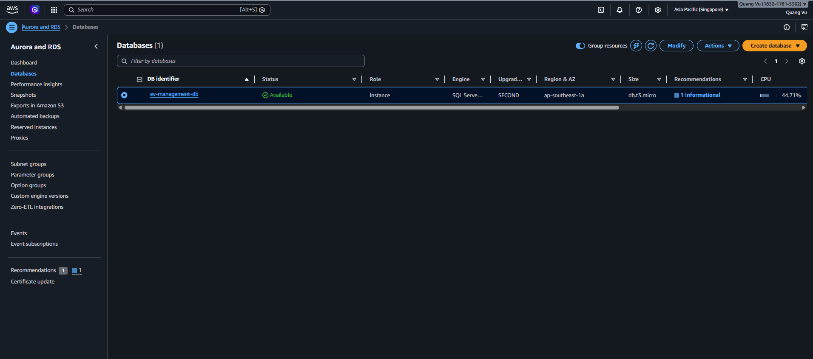
- Dịch vụ cơ sở dữ liệu quan hệ được quản lý cho tầng dữ liệu của hệ thống.
- Tự động xử lý provisioning, backup, patching và failover.
- Giảm đáng kể gánh nặng vận hành so với việc tự quản lý database trên EC2.
Primary Database Instance
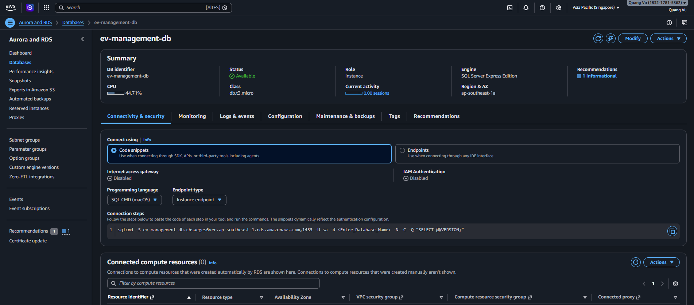
- Xử lý workload giao dịch chính.
- Thực hiện các thao tác đọc/ghi từ ứng dụng.
- Là endpoint chính cho các thay đổi dữ liệu mang tính nghiệp vụ.
Standby Database Instance
- Duy trì bản sao đồng bộ với instance chính.
- Tự động chuyển sang hoạt động khi xảy ra failover.
- Tồn tại nhằm tăng độ bền chứ không phải để phục vụ traffic trực tiếp từ người dùng.
Không có truy cập công khai
- Đảm bảo database không thể truy cập trực tiếp từ internet.
- Chỉ cho phép truy cập từ các resource nội bộ trong VPC.
- Giảm bề mặt tấn công và tránh các lỗi mở CIDR quá rộng.
Kết nối EC2 tới RDS
- Application server kết nối tới database qua mạng private.
- Thường sử dụng security group và endpoint nội bộ.
- Giữ cho hợp đồng kết nối giữa app và database ổn định ngay cả khi node vật lý thay đổi trong lúc bảo trì hoặc failover.
Luồng AWS từng bước
- Backend chạy trên EC2 cần đọc hoặc ghi dữ liệu nghiệp vụ. Dịch vụ: Amazon EC2. Điều xảy ra: Ứng dụng mở connection pool tới RDS endpoint và gửi thao tác giao dịch. Tại sao quan trọng: Ứng dụng nên phụ thuộc vào endpoint quản lý, không phải IP của một node cụ thể.
- Request đến primary RDS instance. Dịch vụ: Amazon RDS. Điều xảy ra: Primary DB instance xử lý transaction của ứng dụng. Tại sao quan trọng: Đây là điểm ghi dữ liệu cốt lõi của hệ thống.
- RDS giữ một bản standby được đồng bộ. Dịch vụ: Amazon RDS. Điều xảy ra: Trạng thái dữ liệu được sao chép theo availability mode đã chọn. Tại sao quan trọng: Đây là nền tảng cho failover và độ bền của dữ liệu.
- Database không thể bị truy cập trực tiếp từ internet. Dịch vụ: RDS, private subnet, security group. Điều xảy ra: Chỉ các đường kết nối nội bộ đã được phê duyệt mới tới được database port. Tại sao quan trọng: Data tier vẫn được bảo vệ kể cả khi public endpoint khác của hệ thống đang bị tấn công.
- Khi primary gặp lỗi, RDS có thể chuyển sang đường standby. Dịch vụ: Amazon RDS. Điều xảy ra: RDS chuyển vai trò primary để ứng dụng có thể reconnect qua cùng logical endpoint. Tại sao quan trọng: Cần chấp nhận một khoảng gián đoạn ngắn, nhưng không nên phải sửa cấu hình ứng dụng.
Hành vi request và response
- Input request: Ứng dụng gửi thao tác SQL như một phần của workflow nghiệp vụ đồng bộ.
- Xử lý: Primary xử lý đọc/ghi, còn standby giữ vai trò tăng độ bền.
- Output response: Ứng dụng nhận kết quả query, xác nhận transaction hoặc exception từ database.
- Failure behavior: Trong lúc failover hoặc bảo trì, timeout và cơ chế reconnect trở thành một phần của hợp đồng ứng dụng.
Key Logic / Rules
- Primary database là endpoint chính cho giao dịch bình thường của ứng dụng.
- Standby database giúp tăng độ bền nhưng không phải user-facing endpoint.
- Network isolation là quy tắc cốt lõi của thiết kế, vì sơ đồ ghi rõ data tier không có public access.
- Giữ data tier ở trạng thái private làm giảm attack surface và hạn chế các đường kết nối ngoài ý muốn.
- Mọi tương tác với database phải đi qua application layer.
- Thông tin kết nối nên được lấy từ secret thay vì hard-code trong artifact của ứng dụng.
- Nếu sau này xuất hiện bài toán đọc nhiều, nên cân nhắc read replica hoặc reporting store thay vì ép primary làm tất cả.
AWS CLI Walkthrough
1. Kiểm tra DB instance
aws rds describe-db-instances \
--db-instance-identifier ${DB_INSTANCE_ID} \
--region ${AWS_REGION}
2. Hiển thị trạng thái, cờ Multi-AZ và endpoint
aws rds describe-db-instances \
--db-instance-identifier ${DB_INSTANCE_ID} \
--region ${AWS_REGION} \
--query 'DBInstances[0].[DBInstanceStatus,MultiAZ,Endpoint.Address,Endpoint.Port]' \
--output table
3. Thực hiện failover test ở môi trường không phải production đã được phê duyệt
aws rds reboot-db-instance \
--db-instance-identifier ${DB_INSTANCE_ID} \
--force-failover \
--region ${AWS_REGION}
Chỉ dùng lệnh failover khi:
- chế độ Multi-AZ hoặc tương đương thực sự đã bật,
- chủ môi trường đã phê duyệt bài test,
- nhóm ứng dụng sẵn sàng quan sát hành vi reconnect.
Ví dụ cấu hình
Mô hình truy cập database được khuyến nghị
| Hạng mục | Thiết lập khuyến nghị | Ý nghĩa |
|---|---|---|
| DB subnet group | Private subnet ở ít nhất hai Availability Zone | Hỗ trợ isolation và placement của standby |
| Public accessibility | Tắt | Ngăn truy cập trực tiếp từ internet |
| Nguồn truy cập | Chỉ cho phép từ security group của EC2 ứng dụng | Giới hạn chính xác bên được mở session |
| Database port | ${DB_PORT} theo engine đang dùng |
Làm rule rõ ràng và dễ kiểm toán |
| Điểm kết nối | Dùng DNS endpoint của RDS, không dùng IP của instance | Cho phép failover mà không sửa cấu hình app |
Ví dụ thông tin kết nối lưu trong Secrets Manager
{
"host": "ev-prod-rds.xxxxxx.ap-southeast-1.rds.amazonaws.com",
"port": 1433,
"database": "evcharging",
"username": "app_user",
"password": "change-me"
}
Best practices cho lớp này
- Bật automated backup và kiểm tra point-in-time recovery.
- Dùng engine-specific parameter group thay vì chỉnh database một cách tùy tiện.
- Kiểm soát connection pool để failover không gây reconnect storm.
- Mã hóa storage và snapshot bằng KMS-managed key.
- Tài liệu hóa migration và rollback riêng, không trộn lẫn với deploy ứng dụng thông thường.
Những gì cần xác minh
- RDS instance không public accessible.
- Ứng dụng kết nối bằng RDS endpoint, không phải private IP cố định.
- DB subnet group dùng private subnet.
- Chỉ security group của ứng dụng được phép tới database port.
- Quy trình failover đã được thử ở ngoài production và có tài liệu ghi lại.
Lỗi thường gặp
- Mở database cho dải CIDR rộng thay vì chỉ cho security group của ứng dụng.
- Lưu hostname database trực tiếp trong source code thay vì secret được quản lý.
- Hiểu nhầm standby là query endpoint trong khi sơ đồ chỉ cho thấy cặp primary và standby.
- Chạy failover test cưỡng bức mà không thông báo trước cho nhóm ứng dụng.
- Tưởng rằng database quan hệ sẽ tự scale vô hạn mà không cần tối ưu query, read isolation hoặc kiến trúc phụ trợ về sau.
Ghi chú / Giả định
- Sơ đồ cho thấy rất rõ mô hình primary và standby kiểu Multi-AZ, nhưng không nêu chính xác engine hay deployment mode của RDS.
- Backup retention, point-in-time recovery và encryption setting không hiển thị trong hình.
- Không có read replica, cache hay analytics database trong sơ đồ nên không được giả định là đang tồn tại.
- DynamoDB và Aurora được coi là ngoài phạm vi của kiến trúc hiện tại.
Thực hành truy cập vận hành và quản trị bí mật
Tổng quan
- Phần này giải thích cách operator và application instance truy cập môi trường mà không cần public server.
- Nội dung tập trung vào AWS Systems Manager, IAM instance profile, AWS Secrets Manager và AWS KMS.
- Đây là phần nên xem trước khi xử lý tình huống admin không vào được private EC2 hoặc ứng dụng không đọc được secret.
- Ở góc độ vận hành thực tế, đây là phần giải thích cách con người và máy cùng được cấp trust mà không phải quay lại hardcoded credential hoặc public SSH.
Phần này làm gì:
- Cung cấp đường truy cập vào EC2 private cho operator qua Systems Manager.
- Cấp danh tính máy cho EC2 thông qua IAM instance profile.
- Đưa secret ra khỏi file cấu hình cục bộ và bảo vệ chúng bằng Secrets Manager cùng KMS.
Vì sao phần này tồn tại:
- Hệ thống production không nên phát tán AWS key dài hạn hoặc SSH key một cách tùy tiện.
- Truy cập của operator phải audit được và có thể thu hồi.
- Secret phải được quản lý tập trung, mã hóa và có thể xoay vòng độc lập với chu kỳ release của ứng dụng.
Phần này giải quyết vấn đề gì:
- Public đường quản trị vào private server
- Hardcoded credential trong application
- Machine identity yếu và quyền bị dàn trải
- Thiếu kiểm soát ở mức key đối với dữ liệu nhạy cảm
Các dịch vụ AWS trong phần này
AWS Systems Manager (SSM)

- Cung cấp truy cập có kiểm soát cho operator vào EC2 trong private subnet.
- Không cần mở SSH hay public IP.
- Có thể hỗ trợ session tương tác, chạy lệnh từ xa và runbook chuẩn hóa.
IAM Instance Profile

- Cấp danh tính cho EC2 instance.
- Cho phép ứng dụng truy cập AWS service mà không cần hardcode credential.
- Cung cấp temporary credential được AWS tự xoay vòng.
AWS Secrets Manager
- Lưu trữ các thông tin nhạy cảm như connection string, API key.
- Cho phép ứng dụng lấy secret một cách an toàn trong runtime.
- Tách vòng đời của secret khỏi vòng đời deploy ứng dụng.
AWS KMS
- Mã hóa và bảo vệ secret.
- Kiểm soát quyền truy cập key thông qua IAM.
- Biến bài toán mã hóa thành trách nhiệm của managed service thay vì để application tự xử lý.
Amazon EC2

- Sử dụng IAM role và lấy secret trong runtime.
- Là nơi thực thi application một cách an toàn.
- Dùng machine identity để truy cập CloudWatch, SES, Secrets Manager và các AWS API khác.
Luồng AWS từng bước
- Operator cần shell access hoặc run-command access vào một EC2 instance private. Dịch vụ: AWS Systems Manager. Điều xảy ra: Operator khởi tạo một phiên SSM tới instance mục tiêu. Tại sao quan trọng: Không cần bastion host hay mở public SSH.
- Instance xác thực bằng danh tính máy. Dịch vụ: IAM instance profile. Điều xảy ra: EC2 nhận temporary credential từ IAM role được gắn. Tại sao quan trọng: Ứng dụng có thể gọi AWS API mà không cần static access key.
- Ứng dụng yêu cầu một secret. Dịch vụ: AWS Secrets Manager. Điều xảy ra: App gọi lấy secret theo tên trong runtime. Tại sao quan trọng: Credential database và token tích hợp có thể được xoay vòng ngoài gói triển khai.
- Secret được giải mã theo mô hình bảo vệ của KMS. Dịch vụ: AWS KMS. Điều xảy ra: Secrets Manager dùng cơ chế mã hóa dựa trên KMS cho giá trị secret lưu trữ. Tại sao quan trọng: Secret được mã hóa và việc dùng khóa có thể được kiểm soát.
- IAM role đó cũng có thể cho phép ghi log và gửi email. Dịch vụ: IAM, CloudWatch, SES. Điều xảy ra: Role của instance cho phép các thao tác AWS khác mà workload cần. Tại sao quan trọng: Một danh tính máy duy nhất có thể phục vụ nhiều tích hợp nhưng vẫn giữ được kiểm soát quyền.
Hành vi request và response
- Operator request: SSM nhận yêu cầu truy cập và tạo phiên nếu instance đã đăng ký và đúng quyền.
- Application request: Workload gọi Secrets Manager để lấy cấu hình hoặc credential theo tên.
- Crypto response: KMS cho phép hoặc từ chối giải mã tùy theo IAM và key policy.
- Service response: Instance hoặc nhận được secret cần thiết để chạy tiếp, hoặc lỗi sẽ lộ ra như một vấn đề policy hay cấu hình.
Key Logic / Rules
- Truy cập quản trị đi qua SSM, tránh phải mở public SSH hay dùng bastion trong thiết kế này.
- Secret được tách ra khỏi application server và lưu trong managed service.
- IAM role thực thi nguyên tắc least privilege cho machine identity.
- Encryption được coi là năng lực managed của nền tảng chứ không phải key store do ứng dụng tự sở hữu.
- Instance profile trong sơ đồ được dùng để đọc secret, ghi log và gửi email.
- Trong production, phạm vi resource của IAM nên chặt hơn nhiều so với ví dụ đơn giản trong workshop.
AWS CLI Walkthrough
1. Mở phiên SSM vào private instance
aws ssm start-session \
--target ${INSTANCE_ID} \
--region ${AWS_REGION}
2. Xác minh IAM instance profile đang được gắn
aws ec2 describe-instances \
--instance-ids ${INSTANCE_ID} \
--region ${AWS_REGION} \
--query 'Reservations[0].Instances[0].IamInstanceProfile.Arn' \
--output text
3. Đọc giá trị secret
aws secretsmanager get-secret-value \
--secret-id ${DB_SECRET_ID} \
--region ${AWS_REGION}
4. Liệt kê alias KMS
aws kms list-aliases --region ${AWS_REGION}
Cách đọc các lệnh này:
- Một phiên SSM thành công là bằng chứng cho thấy cả management plane lẫn việc đăng ký instance đều đúng.
- Nếu thiếu ARN của instance profile thì đó thường là nguyên nhân cho lỗi đọc secret, gửi log hoặc gọi SES.
- Lỗi đọc secret thường đến từ IAM, sai secret ID hoặc thiếu quyền KMS.
- Việc liệt kê alias KMS giúp kiểm tra ranh giới mã hóa có thực sự tồn tại trong môi trường hay không.
Ví dụ cấu hình
Quyền tối thiểu cho instance-role trong kiến trúc này
{
"Version": "2012-10-17",
"Statement": [
{
"Effect": "Allow",
"Action": [
"secretsmanager:GetSecretValue",
"kms:Decrypt",
"logs:CreateLogStream",
"logs:PutLogEvents",
"ses:SendEmail",
"ses:SendRawEmail"
],
"Resource": "*"
}
]
}
Ý nghĩa của policy này:
- Instance đọc được secret.
- Instance giải mã được dữ liệu thông qua KMS.
- Instance ghi log và gửi email được.
- Không cần lưu static AWS key trên máy chủ.
Best practices cho lớp này
- Thay wildcard bằng ARN cụ thể của secret và key trong production.
- Bật Session Manager logging về CloudWatch hoặc S3 để audit.
- Tách role của operator và role của workload để tránh lẫn lộn quyền.
- Dùng naming convention kiểu
service/environment/purposecho secret. - Cân nhắc secret rotation tự động nếu ứng dụng chịu được cơ chế đó.
Những gì cần xác minh
- EC2 instance mục tiêu đã được đăng ký trong Systems Manager.
- Instance có IAM instance profile đi kèm.
- Ứng dụng đọc được đúng các secret name mà nó cần.
- Quyền KMS chỉ cấp cho principal thực sự cần giải mã.
- Operator dùng SSM thay vì mở inbound SSH từ internet.
Lỗi thường gặp
- Gắn role cho EC2 nhưng quên cấp
secretsmanager:GetSecretValue. - Có quyền Secrets Manager nhưng thiếu
kms:Decryptkhi dùng customer-managed KMS key. - Nhầm rằng xác thực người dùng cuối nằm ở đây trong khi sơ đồ chỉ thể hiện đường truy cập cho operator.
- Quay lại hard-coded credential vì naming convention của secret chưa rõ ràng.
- Giữ nguyên IAM policy quá rộng sau khi workshop kết thúc.
Ghi chú / Giả định
- Sơ đồ không ghi cụ thể chế độ SSM nào, nhưng Session Manager là cách hiểu trực tiếp nhất cho truy cập tương tác.
- Secret rotation và KMS key rotation policy không được thể hiện.
- Không có identity provider riêng hay workflow engine chi tiết cho admin trong sơ đồ, nên tài liệu tập trung vào những AWS control đang nhìn thấy được.
- Trong môi trường siết chặt hơn, có thể dùng VPC endpoint cho SSM, Secrets Manager và CloudWatch để giảm phụ thuộc vào NAT đối với control-plane traffic.
Thực hành giám sát, kiểm toán và gửi email
Tổng quan
- Phần này giải thích cách operator quan sát nền tảng đang chạy, kiểm toán hoạt động AWS và xác minh luồng gửi email outbound.
- Nội dung tập trung vào Amazon CloudWatch, AWS CloudTrail, Amazon SES và các bản ghi DNS email trong Route 53.
- Đây là phần nên dùng khi nhóm cần soi log, truy vết hành động vận hành hoặc kiểm tra đường gửi mail của ứng dụng.
- Nếu nhìn theo góc độ production, đây là lớp khép lại vòng lặp giữa hành vi của ứng dụng, khả năng nhìn thấy của operator và giao tiếp ra bên ngoài với người dùng.
Phần này làm gì:
- Thu thập tín hiệu vận hành từ môi trường đang chạy.
- Ghi lại hoạt động control-plane để phục vụ bảo mật và compliance.
- Cho phép ứng dụng gửi email qua một dịch vụ managed.
Vì sao phần này tồn tại:
- Không có log và metric thì đội vận hành phản ứng với sự cố quá chậm.
- Không có audit trail thì không thể trả lời chính xác ai đã thay đổi điều gì và vào lúc nào.
- Không có managed email service thì việc gửi mail giao dịch trở nên mong manh và tốn công vận hành.
Phần này giải quyết vấn đề gì:
- Thiếu khả năng quan sát khi có sự cố
- Không có bằng chứng audit cho thao tác của operator
- Phải tự quản lý SMTP và danh tiếng gửi mail
- Thiếu niềm tin vào khả năng gửi thông báo cho người dùng
Các dịch vụ AWS trong phần này
Amazon CloudWatch
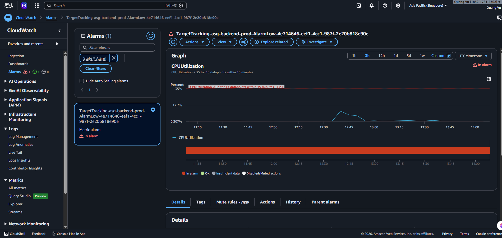
- Lưu trữ log và metric của hệ thống đang chạy.
- Hỗ trợ monitoring, alert và debug hệ thống.
- Là telemetry plane chính cho workload trong workshop.
AWS CloudTrail
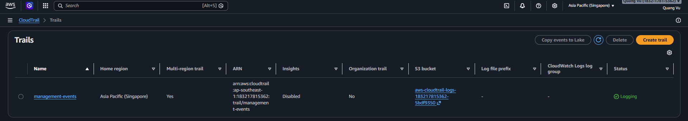
- Ghi lại toàn bộ hoạt động API trong AWS.
- Phục vụ audit, bảo mật và compliance.
- Giúp truy vết thay đổi hạ tầng và thao tác của operator kể cả khi sự cố đã qua.
Amazon SES

- Gửi email từ ứng dụng (notification, verify, v.v.).
- Cần cấu hình domain và DNS hợp lệ.
- Giảm gánh nặng phải tự quản lý SMTP server và sender reputation.
DNS trong Route 53 (cho SES)
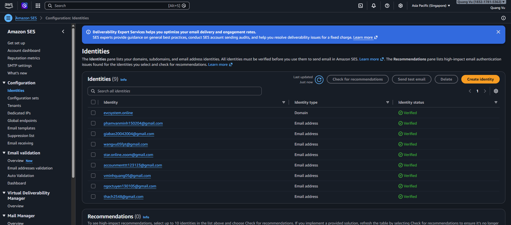
- Cung cấp bản ghi DNS để xác thực domain và gửi email.
- Bao gồm DKIM, SPF, MX phục vụ SES.
- Là điều kiện hạ tầng bắt buộc để sender identity trở nên đáng tin cậy.
IAM Role gắn với EC2
- Cấp quyền cho EC2:
- Ghi log lên CloudWatch
- Gửi email qua SES
- Không cần hardcode credential trong code.
- Giữ machine identity nhất quán với phần còn lại của kiến trúc.
Vì sao thiết kế này dùng tích hợp AWS trực tiếp
- Sơ đồ hiển thị trực tiếp CloudWatch và CloudTrail, nên observability được xây dựng trên bộ công cụ native của AWS.
- Email được gửi trực tiếp qua Amazon SES thay vì qua một dịch vụ messaging hay event bus riêng.
- EventBridge, SQS và SNS không xuất hiện trong kiến trúc, nên workshop này không giả định có pipeline notification theo kiểu event-driven.
- Kiểu tích hợp trực tiếp này giúp kiến trúc dễ hiểu hơn, nhưng cũng có nghĩa là side effect trong request path vẫn còn gắn chặt cho tới khi có lớp async.
Luồng AWS từng bước
- Ứng dụng phát sinh log và metric runtime. Dịch vụ: Amazon CloudWatch. Điều xảy ra: Tín hiệu vận hành và log của ứng dụng được ghi vào log group và metric của CloudWatch. Tại sao quan trọng: Log và metric là nơi đầu tiên cần kiểm tra khi xuất hiện lỗi phía người dùng.
- Operator kiểm tra log đang chạy. Dịch vụ: Amazon CloudWatch Logs. Điều xảy ra: Nhóm vận hành tail log hoặc truy vấn log stream để tìm lỗi và vấn đề timing. Tại sao quan trọng: Chẩn đoán nhanh phụ thuộc vào việc mở đúng log group càng sớm càng tốt.
- Hoạt động control-plane của AWS được ghi nhận. Dịch vụ: AWS CloudTrail. Điều xảy ra: Các hành động như mở phiên SSM hay thay đổi hạ tầng được lưu thành audit event. Tại sao quan trọng: Nhóm có thể biết ai đã thay đổi điều gì và vào thời điểm nào.
- Ứng dụng gửi email qua SES. Dịch vụ: Amazon SES. Điều xảy ra: Workload trên EC2 gọi SES API bằng IAM role của chính instance. Tại sao quan trọng: Hệ thống có thể gửi notification, OTP hoặc mail vận hành mà không cần tự quản lý SMTP server.
- SES phụ thuộc vào bản ghi DNS trong Route 53. Dịch vụ: Amazon SES và Route 53. Điều xảy ra: Bản ghi xác thực domain, DKIM và mail routing được xuất bản trong hosted zone. Tại sao quan trọng: Nếu DNS record không đúng, SES sẽ không verify identity hoặc không đạt deliverability như mong đợi.
Hành vi request và response
- Telemetry request: Ứng dụng gửi log có cấu trúc hoặc metric lên CloudWatch.
- Audit response: CloudTrail nhận event do AWS service sinh ra.
- Email request: Ứng dụng gửi payload email tới SES và nhận trạng thái thành công hoặc lỗi.
- DNS verification behavior: Trạng thái identity của SES chỉ chuyển sang sẵn sàng sau khi record trong Route 53 đã tồn tại và propagate đầy đủ.
Mô hình phản ứng vận hành
- CloudWatch trả lời câu hỏi “ứng dụng đã làm gì”.
- CloudTrail trả lời câu hỏi “operator hoặc AWS service đã thay đổi gì”.
- SES cùng Route 53 trả lời câu hỏi “hệ thống có thật sự giao tiếp được ra bên ngoài hay không”.
AWS CLI Walkthrough
1. Tail log ứng dụng gần đây
aws logs tail ${LOG_GROUP} \
--since 30m \
--follow \
--region ${AWS_REGION}
2. Tra cứu audit event gần đây
aws cloudtrail lookup-events \
--lookup-attributes AttributeKey=EventName,AttributeValue=StartSession \
--max-results 10 \
--region ${AWS_REGION}
3. Kiểm tra trạng thái SES identity
aws sesv2 get-email-identity \
--email-identity ${SES_IDENTITY} \
--region ${AWS_REGION}
4. Gửi một email kiểm tra qua SES
Tạo file ses-test-email.json:
{
"FromEmailAddress": "no-reply@example.com",
"Destination": {
"ToAddresses": [
"ops@example.com"
]
},
"Content": {
"Simple": {
"Subject": {
"Data": "EV platform test email"
},
"Body": {
"Text": {
"Data": "If you received this message, SES delivery is working."
}
}
}
}
}
Gửi email:
aws sesv2 send-email \
--cli-input-json file://ses-test-email.json \
--region ${AWS_REGION}
5. Tạo một CPU alarm đơn giản cho backend instance
aws cloudwatch put-metric-alarm \
--alarm-name ev-app-instance-high-cpu \
--metric-name CPUUtilization \
--namespace AWS/EC2 \
--statistic Average \
--period 300 \
--threshold 80 \
--comparison-operator GreaterThanThreshold \
--dimensions Name=InstanceId,Value=${INSTANCE_ID} \
--evaluation-periods 2 \
--region ${AWS_REGION}
Cách đọc các lệnh này:
- Tail log trực tiếp giúp rút ngắn đáng kể thời gian phản ứng khi có sự cố.
- CloudTrail lookup xác minh thao tác vận hành thực sự đang được ghi lại.
- Kiểm tra SES identity giúp tránh việc đổ lỗi cho ứng dụng khi nguyên nhân thật nằm ở sender verification.
- Test email kiểm tra đồng thời IAM, SES, DNS và region.
- Alarm biến telemetry thành tín hiệu có thể hành động, thay vì chỉ là dữ liệu để xem.
Ví dụ cấu hình
Ví dụ các bản ghi Route 53 cho thiết lập SES domain
Tạo file ses-identity-records.json:
{
"Comment": "SES identity verification records",
"Changes": [
{
"Action": "UPSERT",
"ResourceRecordSet": {
"Name": "example.com",
"Type": "TXT",
"TTL": 300,
"ResourceRecords": [
{
"Value": "\"amazonses:verification-token\""
}
]
}
},
{
"Action": "UPSERT",
"ResourceRecordSet": {
"Name": "selector1._domainkey.example.com",
"Type": "CNAME",
"TTL": 300,
"ResourceRecords": [
{
"Value": "selector1-example-com.dkim.amazonses.com"
}
]
}
},
{
"Action": "UPSERT",
"ResourceRecordSet": {
"Name": "mail.example.com",
"Type": "MX",
"TTL": 300,
"ResourceRecords": [
{
"Value": "10 inbound-smtp.ap-southeast-1.amazonaws.com"
}
]
}
}
]
}
Áp dụng các bản ghi DNS:
aws route53 change-resource-record-sets \
--hosted-zone-id ${HOSTED_ZONE_ID} \
--change-batch file://ses-identity-records.json
Best practices cho lớp này
- Dùng structured log để có thể lọc và truy vấn nhất quán.
- Tách retention period cho application log, security log và audit log.
- Xem CloudTrail là dữ liệu governance bắt buộc, không chỉ là công cụ debug.
- Bổ sung bounce và complaint handling nếu hệ thống gửi mail cho khách hàng ở quy mô lớn.
- Chỉ tạo alarm cho những tín hiệu thật sự có owner và runbook phản ứng.
Những gì cần xác minh
- Log của ứng dụng đã vào đúng CloudWatch log group.
- CloudTrail ghi lại hành động của admin và các thay đổi hạ tầng.
- SES identity đã verify trước khi ứng dụng thử gửi mail.
- Route 53 có đủ TXT, CNAME và MX record mà cấu hình SES yêu cầu.
- CloudWatch alarm đã tồn tại cho những tín hiệu mà nhóm vận hành quan tâm.
- IAM role của EC2 chỉ có đúng những quyền cần cho telemetry và messaging.
Lỗi thường gặp
- Gửi email trước khi verify SES identity.
- Chỉ xem application log mà bỏ qua CloudTrail khi nguyên nhân thực chất là thao tác của operator.
- Tạo alarm nhưng không xác định rõ ai sẽ theo dõi và phản hồi.
- Kỳ vọng luồng notification theo EventBridge hoặc SQS trong khi kiến trúc hiện tại chỉ thể hiện tích hợp SES trực tiếp.
- Xem việc gửi mail chỉ là bài toán của ứng dụng mà quên phụ thuộc DNS.
Ghi chú / Giả định
- Sơ đồ không cho thấy dashboard, dashboards-as-code, tracing hay alarm action.
- Ví dụ alarm cố ý không gắn SNS vì SNS không nằm trong phần kiến trúc đang được thể hiện.
- Các use case email như OTP hoặc notification được suy ra từ việc có SES, nhưng template cụ thể không xuất hiện trong sơ đồ.
- Nếu khối lượng notification hoặc logic retry tăng lên, EventBridge, SQS hoặc SNS sẽ là hướng mở rộng tự nhiên.
Phân tích kiến trúc theo chuẩn production cho workshop AWS
Tổng quan
- Subsection này gom sáu module trước đó lại thành một câu chuyện kiến trúc production hoàn chỉnh.
- Nó giải thích cách các dịch vụ AWS đang hiển thị phối hợp với nhau thành một nền tảng thống nhất, thay vì chỉ là các bài lab tách rời.
- Đây là phần tham chiếu đầy đủ nhất cho các cuộc trao đổi về design review, onboarding và mức độ sẵn sàng vận hành.
- Phân tích ở đây chỉ bám trên nội dung hiện có của
4-Workshop, không kéo sang phạm vi rộng hơn của repository.
Phạm vi nguồn
| Subsection của workshop | Trọng tâm kiến trúc |
|---|---|
4.1 Tổng quan |
Service inventory, trust boundary và end-to-end flow |
4.2 Phân phối biên và yêu cầu dữ liệu bản đồ |
DNS, CDN, WAF, static delivery và geospatial integration |
4.3 Điều phối ứng dụng riêng tư và tầng tính toán |
VPC, ALB, private EC2 runtime, Auto Scaling và egress |
4.4 Độ bền dữ liệu quan hệ và cô lập mạng |
Relational storage, standby posture và private data access |
4.5 Truy cập vận hành và quản trị bí mật |
Truy cập qua SSM, machine identity bằng IAM, secret và KMS |
4.6 Giám sát, kiểm toán và gửi email |
Observability, auditability và outbound email |
Chương gốc 4-Workshop |
Shared variable, boundary của workshop và các dịch vụ bị loại trừ |
Đọc workshop như một codebase kiến trúc
- Workshop vận hành như một bộ tài liệu thiết kế hạ tầng theo lớp.
- Mỗi subsection mô tả một mối quan tâm của nền tảng, các dịch vụ AWS đằng sau nó và cách kiểm tra thực tế.
- Khi ghép lại, các subsection tạo thành một tài liệu tham chiếu cho public ingress, private execution, persistence, governance và observability.
- Giá trị chính của
4.7là giải thích mối quan hệ giữa các module thay vì lặp lại từng module như những phần độc lập.
Kiến trúc nền tảng
Workshop mô tả baseline runtime AWS như sau:
User -> Route 53 -> CloudFront/WAF -> S3
Frontend -> Amazon Location Service
Frontend -> ALB -> Private EC2 -> Amazon RDS
Private EC2 -> Secrets Manager/KMS -> CloudWatch -> SES
Admin -> Systems Manager -> Private EC2
AWS control-plane activity -> CloudTrail
Ranh giới public và private
- Route 53, CloudFront, WAF và ALB tạo thành đường vào public của hệ thống.
- EC2, RDS, Secrets Manager, KMS và phần lớn control plane vận hành nằm trong vùng protected internal estate.
- SES là public service endpoint, nhưng được gọi bởi workload private thông qua AWS API đã xác thực.
Phần kiến trúc này làm gì
- Hiển thị service graph logic của nền tảng.
- Phân biệt dịch vụ nào nằm trên request path của người dùng và dịch vụ nào thuộc control plane hỗ trợ.
- Tạo nền tảng để bàn tiếp về scale, fault tolerance và security.
Module lõi, dịch vụ, API và luồng dữ liệu
| Module lõi | Dịch vụ AWS chính | Đường request chính | Đầu ra quan trọng | Dịch vụ tương lai có thể bổ sung |
|---|---|---|---|---|
| Phân phối edge | Route 53, CloudFront, WAF, S3 | Browser -> DNS -> CDN -> Object storage | Nội dung frontend tĩnh | API Gateway nếu sau này cần governance cho API |
| Tích hợp geospatial | Amazon Location Service | Frontend -> map và place APIs | Kết quả tìm kiếm và ngữ cảnh bản đồ | Lambda nếu sau này cần backend ký request |
| Vào ứng dụng và compute | ALB, EC2, Auto Scaling, NAT, VPC | Frontend -> ALB -> EC2 | Dynamic application response | ECS/EKS nếu cách đóng gói runtime thay đổi |
| Lưu trữ quan hệ | Amazon RDS | EC2 -> RDS | Trạng thái giao dịch bền vững | Read replica, Aurora hoặc store báo cáo khi workload đổi khác |
| Security control plane | IAM, SSM, Secrets Manager, KMS | Operator/app -> AWS control APIs | Trusted access, secret retrieval, protected encryption | Cognito chỉ nếu cần user identity dạng managed pool |
| Observability và communication | CloudWatch, CloudTrail, SES, Route 53 | App và AWS service -> log, audit, mail | Metric, audit event, notification | EventBridge, SQS và SNS nếu cần decouple |
Danh mục giao diện và API
| Giao diện | Nguồn phát sinh | Đích đến | Hành vi |
|---|---|---|---|
| DNS query công khai | Browser | Route 53 | Trả về edge entry point |
| Request nội dung tĩnh | Browser | CloudFront và S3 | Trả asset frontend từ cache hoặc origin |
| Request map hoặc place search | Frontend | Amazon Location Service | Trả dữ liệu geospatial |
| Dynamic API request | Frontend | ALB và EC2 | Thực thi business logic đồng bộ |
| Transactional database call | EC2 | Amazon RDS | Đọc và ghi dữ liệu quan hệ |
| Secret fetch | EC2 | Secrets Manager | Trả cấu hình runtime hoặc credential |
| Decryption authorization | Secrets Manager | AWS KMS | Cho phép hoặc từ chối truy cập secret được bảo vệ |
| Operator session | Quản trị viên | Systems Manager | Thiết lập truy cập có kiểm soát tới EC2 private |
| Telemetry publication | EC2 hoặc agent | CloudWatch | Lưu log và metric |
| Audit event capture | Dịch vụ AWS | CloudTrail | Ghi lại hoạt động control-plane |
| Outbound email send | EC2 | Amazon SES | Gửi mail giao dịch hoặc mail vận hành |
Ánh xạ dịch vụ AWS và hướng mở rộng kiến trúc
| Năng lực | Ánh xạ hiện tại trong workshop | Vì sao phù hợp | Hướng mở rộng hợp lý |
|---|---|---|---|
| Public web entry | Route 53 + CloudFront + ALB | Phù hợp với web platform nhiều lớp có đường static và dynamic tách biệt | Có thể thêm weighted DNS, blue/green cutover hoặc hardening ở edge |
| Compute | EC2 + Auto Scaling | Phù hợp với backend chạy lâu dài | Có thể thêm API Gateway cho governance của API công khai hoặc Lambda cho utility task |
| Data | Amazon RDS | Phù hợp với logic giao dịch và tư thế standby | Có thể thêm read replica hoặc bản sao analytics nếu áp lực đọc tăng |
| Secret handling | Secrets Manager + KMS | Phù hợp với cách quản trị credential tập trung | Có thể thêm rotation tự động và thu hẹp resource scope |
| Admin access | Systems Manager + IAM | Phù hợp với thiết kế không mở public SSH | Có thể thêm session log, runbook và approval workflow |
| Monitoring và audit | CloudWatch + CloudTrail | Phù hợp với observability và accountability kiểu AWS-native | Có thể thêm dashboard, alarm routing và security analytics |
| Communication | SES + Route 53 | Phù hợp với gửi email giao dịch trực tiếp | Có thể thêm bounce processing hoặc fan-out theo kiểu event-driven |
| Xử lý bất đồng bộ | Chưa có | Kiến trúc hiện tại chủ yếu là synchronous | EventBridge, SQS hoặc SNS có thể tách side effect ra khỏi request path |
| Điều phối workflow | Chưa có | Luồng hiện tại chưa cần state machine | Step Functions phù hợp nếu booking, charging hoặc settlement trở thành nhiều bước kéo dài |
Phân rã chi tiết workshop
Chương gốc 4-Workshop
- Định nghĩa phạm vi, biến dùng chung và ranh giới của thiết kế AWS đang được mô tả.
- Chặn scope drift bằng cách nêu rõ dịch vụ nào hiện không nằm trong kiến trúc.
- Đóng vai trò trang mở đầu mang tính vận hành cho toàn bộ chương.
4.1 Tổng quan
- Giải thích kiến trúc ở mức bản đồ tổng thể.
- Giúp người đọc phân loại dịch vụ theo trust boundary và mục đích vận hành.
- Cung cấp bộ lệnh kiểm tra an toàn trước khi thực hiện thao tác thay đổi.
4.2 Phân phối biên và yêu cầu dữ liệu bản đồ
- Mô tả cách người dùng thực sự đi vào hệ thống và cách frontend được phục vụ.
- Chỉ ra rằng caching, origin protection và map integration được tách ra có chủ đích.
- Làm rõ geospatial API là dependency của frontend chứ không nhất thiết là logic của backend.
4.3 Điều phối ứng dụng riêng tư và tầng tính toán
- Mô tả đường thực thi đồng bộ của ứng dụng.
- Xác định request được nhận ở đâu, xử lý ở đâu và unhealthy node bị loại thế nào.
- Giải thích cách compute private vẫn đi ra ngoài được thông qua NAT.
4.4 Độ bền dữ liệu quan hệ và cô lập mạng
- Xác định ranh giới persistence của nền tảng.
- Giải thích vì sao data tier vừa phải bền vững vừa phải khó tiếp cận trực tiếp.
- Cho thấy primary và standby là quyết định về độ sẵn sàng chứ không chỉ là quyết định về lưu trữ.
4.5 Truy cập vận hành và quản trị bí mật
- Giải thích cách hệ thống vẫn quản trị được mà không cần phơi lộ thêm bề mặt tấn công.
- Tách bạch rõ truy cập của con người với machine identity của workload.
- Cho thấy secret governance là một vấn đề kiến trúc, không phải chỉ là chi tiết cấu hình nhỏ trong code.
4.6 Giám sát, kiểm toán và gửi email
- Xác định cách nền tảng tự nói cho operator biết chuyện gì đang xảy ra.
- Bổ sung accountability cho thay đổi ở phía AWS.
- Hoàn thiện đường giao tiếp từ sự kiện nội bộ ra email gửi cho người dùng.
Vòng đời request và luồng tương tác dịch vụ
Vòng đời 1: Người dùng vào hệ thống
- Route 53 phân giải domain.
- CloudFront và WAF xử lý request.
- Frontend tĩnh được trả từ cache hoặc S3.
Vòng đời 2: Người dùng tương tác với bản đồ
- Frontend yêu cầu dữ liệu place hoặc map.
- Amazon Location Service trả về dữ liệu geospatial.
Vòng đời 3: Người dùng thực hiện thao tác nghiệp vụ
- Frontend gửi request động qua ALB.
- Một EC2 private đang healthy xử lý yêu cầu.
- Ứng dụng gọi RDS, CloudWatch, Secrets Manager hoặc SES khi cần.
Vòng đời 4: Operator quản trị hệ thống
- Operator kết nối qua Systems Manager.
- Hoạt động đó được phản chiếu trong CloudTrail.
- Tác động runtime tiếp tục hiện ra trong CloudWatch.
Các cân nhắc khi triển khai
| Hạng mục | Hàm ý hiện tại từ workshop | Khuyến nghị ở mức production |
|---|---|---|
| Frontend release | S3 sync và CloudFront invalidation | Nên dùng artifact versioning và kiểm soát phạm vi invalidation |
| Backend release | Cập nhật fleet EC2 phía sau ALB | Dùng artifact bất biến và rolling replacement |
| Database migration | Chưa được mô tả trực tiếp | Chạy riêng với backup, approval và rollback plan |
| Secret change | Tách khỏi code | Quản lý theo môi trường và có version rõ ràng |
| Email readiness | Phụ thuộc DNS và trạng thái SES | Kiểm tra sender identity trước khi cutover release |
Khả năng mở rộng và chịu lỗi
| Lớp | Điểm mạnh hiện có | Rủi ro chính | Hướng cải thiện thực tế |
|---|---|---|---|
| Phân phối edge | Cache toàn cầu và origin private | Cache cũ hoặc WAF rule sai | Dùng asset versioning và policy edge chặt hơn |
| Application compute | Scale ngang và routing theo health | Nặng session hoặc egress một AZ | Giữ node stateless và cải thiện egress đa AZ |
| Data | Persistence được quản lý và có standby | Failover có thể chưa từng được thử thật | Diễn tập recovery và xác minh giả định Multi-AZ |
| Operations | SSM và IAM giảm phơi lộ | IAM có thể quá rộng | Thu hẹp policy và log admin session |
| Observability | Log, metric và audit native | Thiếu alarm hoặc retention strategy yếu | Bổ sung dashboard, alarm và audit retention policy |
Cơ hội cải thiện và đối chiếu với AWS Well-Architected
| Trụ cột | Điểm mạnh hiện có | Bước tiếp theo hợp lý |
|---|---|---|
| Operational Excellence | Tài liệu phân lớp rõ ràng và có CLI validation | Chuyển các bước kiểm tra thành runbook và kiểm tra hạ tầng có thể lặp lại |
| Security | EC2 private, RDS private, IAM, SSM, KMS và WAF | Siết permission, bật session logging và quản lý certificate chặt hơn |
| Reliability | Auto Scaling, target health và tư thế database có standby | Loại bỏ điểm yếu NAT một AZ và test failover định kỳ |
| Performance Efficiency | CloudFront caching và EC2 scale-out | Tối ưu cache behavior và theo dõi hotspot ở database |
| Cost Optimization | Managed service giúp giảm custom overhead | Rà soát chi phí NAT, right-size host và dùng lifecycle policy |
Hướng tiến hóa tự nhiên
- Chỉ đưa API Gateway vào khi nhu cầu quản trị API vượt quá khả năng tự nhiên của ALB.
- Bổ sung Lambda cho utility automation thay vì thay backend EC2 quá sớm.
- Bổ sung Step Functions khi booking, charging và settlement trở thành workflow nhiều bước kéo dài.
- Bổ sung EventBridge, SQS hoặc SNS khi background processing cần tách khỏi request path.
Ghi chú / Giả định
- Phân tích chuyên sâu này chỉ giới hạn trong chương
4-Workshopvà bảy subsection hiện có của nó. - Kiến trúc hiện tại được mô hình hóa là chủ yếu đồng bộ, dù hướng mở rộng bất đồng bộ là hoàn toàn hợp lý về sau.
- TLS certificate, subnet association, security group, IAM trust policy và các thành phần hỗ trợ khác được xem là điều kiện ngầm định bắt buộc, dù workshop không luôn vẽ chúng ra một cách tường minh.